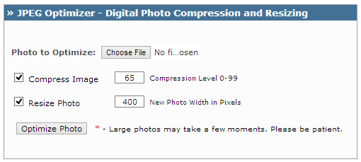

It’s really important to optimize images as it makes your site load fast, which improves the website’ SEO. Google has confirmed that Website loading speed is one of the ranking factor. On the other hand if you are sharing pictures through email or posting it to a social networking site then also you might consider optimizing them. Here, we have shared 10 amazing tools to optimize your images so that you can easily optimize and embed images in your post without even worrying about webpage load time and bandwidth consumption.
Alt Tags
Search engine bots cannot read the images so you should use Alt tag to let them know about image description.
Although it’s quite a simple task to add alt tag in your images, there are few plugins which can automate this process for you. These plugins are for WordPress users. One of the best and most popular plugin is SEO Friendly Images. This is an amazing plugin which automates the whole process. It automatically adds your primary keyword in the alt tag. Moreover it can override the alt tag of previously uploaded images in bulk, which can be really useful if you have forgot to add alt tag or didn’t give a meaningful description to your images.
Image File Name
File names plays a major role when it comes to image searches. You heard it right!! Image searches can add a extra stream of traffic to your blog so It is important you give a meaningful name to images you use.
10 Amazing Tools for Image Optimization
1) Smush.it
It is one of the best and free image optimization tool available online. You can compress images in bulk. Moreover, if you are running a WordPress blog then you need not to compress image online, you can do all these things and a lot more using Smush.it WordPress plugin. If you have any questions regarding it then you can get the answer here at FAQ page.
2) Online Image Optimizer
This is another great online website for image optimization. There is a limit of input file size which is 2.86 MB. Using it you can optimize gif, jpg and png images and it gives you the flexibilty to choose the type (GIF, JPG and PNG) of output image file.
3) PNGOUT
PNGOut can be used to optimize png image files only. It doesn’t work with other extension files such as .jpeg, .jpg, .gif etc. There are several options available which you can customize as per the need. It’s a best solution for compressing .png files.
4) WebResizer
It works with almost all the popular image extensions. The settings which you can customize are image height, width, image sharpness, Tint, Contrast, Exposure, color saturation, border, Pad, Edge and compression.
5) JPEG Optimizer
JPEG Optimizer is a free online tool which helps in re-sizing and compressing images. Head over to the website browse the image, choose compression level (between 0 to 99), input the width of the output image and click on “Optimize Photo“. That’s it!!

6) Free Image Optimizer
This is absolutely amazing tool which I’m using personally for image re-sizing and compression. All you have to do it download the software at your desktop and compress individual image or folder of images. For example you want to change the size of all the images of a particular folder along with the compression, you can do so by using this software. Pretty simple to use!!
7) RIOT
RIOT stands for Radical Image Optimization tool. Main features: Transfers meta data between from input image to output image, Process multiple files in one go, supports image meta data and common features such as re-sizing and image compression.
8) PNGGauntlet
Mainly used for optimizing .png files.It can be best solution for PNG images as using it you can change the file size without even loosing the image quality. It converts TIFF, JPG, GIF and BMP files to output PNG image file.
9) SuperGIF
Useful for optimizing .gif image files. It claims to reduce GIF images over 50% and GIF animation over 80%.
10) SuperPNG
Works well for .png files. It provides you few advanced features such as alpha channel control, variable compression, ICC profile embedding and meta data saving along with the basic features of an image optimizer. Find the blog here in order to get to know more about SuperPNG
Nice collection..